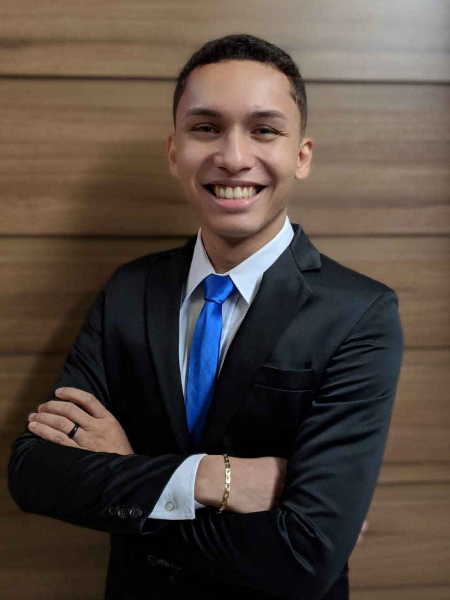

Lucas Ramon

Contato
- 91991988215
- lucas.ramon.pinheiro@gmail.com
-
LinkedIn
Endereço
def multiplicar(num1, num2):
return num1 * num2
Principais competências
Análise de dados, Python, Programação lógica
Linguagens
English
Resumo
Estou cursando Engenharia da Computação na Universidade Federal do Pará (UFPA). Iniciei este curso em Tucuruí cursando 2 anos e meio e depois transferi para Belém em 2018. Fui estagiário do Museu Paraense Emilio Goeldid e atualmente estou estagiando em uma das maiores empresas de aluminio do mundo, a Norsk Hydro. Sou aspirante a Cientista de Dados e pesquisador de Imagens e Vídeos 360º.
Formação acadêmica
Universidade Federal do Pará
Graduação, Engenharia de Computação · (2015 - 2020)
Experiência
- Norsk Hydro
Estagiário
Agosto de 2018 - Maio de 2020
Belém, Pará
- Faço interface entre a organização e as terceirizadas responsável por dar suporte ao cliente.
- Dou suporte a clientes que utilizam computadores e telefones celulares corporativos, fazendo manutenção preventiva e corretiva de software e hardware, bem como de acessos de usuários nos equipamentos.
- Atuo em ações de melhoria da área de GBS TI e também participo de processos de automatização na área de GBS Finance TAX onde Desenvolvi um programa, em liguagem Python, de importação de dados do software SAP para o Software PerdComp que está em fase de implementação e o mesmo está sendo expandido para outros setores da área.
- Desenvolvi junto à minha equipe o projeto para análise da emoção dos empregados, auxiliando nas ações para melhorar o clima organizacional da empresa. Ele foi desenvolvido com a utilização da linguagem de programação Python, com os recursos cognitivos da Microsoft e ferramentas simples de hardware. Com isso ganhei o prêmio de Melhor Projeto do Programa de Estágio de 2019 na empresa. Com a nossa aplicação chamada How Are You™ eu consegui viajar para São Paulo e fazer o curso de Liderança 32h da Fundação Estudar.
- Fiz o curso de Liderança 32h da Fundação Estudar em São Paulo onde aprendi as principais características de um Líder e como desenvolver uma postura protagonista na minha própria vida e carreira.
- Durante o Programa de Estágio da empresa tive treinamentos de Comunicação e Oratória, de Gestão de Carreira e também de Metodologias Ágeis como o Scrum.
- MCT / Museu Paraense Emilio Goeldi
Estagiário
Abril de 2018 - Julho de 2018 (4 meses)
Belém e Região, Brasil
- Dava suporte a clientes que utilizam computadores, fazendo manutenção preventiva e corretiva de software e hardware, bem como de acessos de usuários nos equipamentos.
- htm
- html
- Arquivos que tem o conteúdo escrito em HTML
- No Windows, .html e .htm são arquivos......
Currículo em PDF do LinkedIn
Exemplo de Link
Foto Para o Currículo